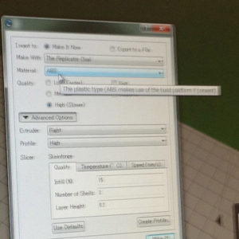

Kousuke Kikuchi
Fab Academy Participant and PhD Candidate
Week 5: 3D scanning and printing
Abstract
I tried to design process of scanning and printing with being similar as a design method of Frank Owen Gehry, the most famous architect in the United States. Hence, I decided to design architecture based on fully cooperation of scanning a ruffled paper and 3D CAD. But, since I was not proficient in 3D printing, I printed out different 3D model as the scanned model.
1. Introduction
"Spatial Expression" was the most difficult subject at the entrance examination of Waseda Architecture. Our assignment was following steps: Making 3D object based on one A4 paper, drawing a picture of the object, adding our life image into the pictute. I found later that the aim of this subject was to think the relationship between form and function of architectural design. When thinking about this week assignment, I reminded this method. I would like to apply this method to make interesting space or form of an architecture. Also, Frank Owen Gehry, who has been the American top architect for few decades, designs architecture based on the similar method.
Hence, the process of this week's assignment was following clauses. 3D printing, 3D scanning, designing architechture, Printing out arhcitectural model if time is available.
2. 3D printing
I printed out a famous character from Reprecator 2, made by MakerBot. This model can be found at 123D Creature.
MakerBot offers the instructive application for 3D printing named MakerWare. MakerWare is a powerful application for printing out 3D model because it automatically slices the 3D model and executes.
After opening MakerWare, we can open STL format file, one of the 3D formats. At this time, the size should be modified because of the diffferent credit between [mm] and [inche]. Before the printing, we must reassure that there are checks at "Support" and "Raft." The "Raft" was making foundation of 3D model and "Support" indicates the support of structure. c.f. How to Use MakerWare

One failure occurs at printing out due to the nozzle of 3D printer not being sufficiently worked. If the problem regarding the nozzle, push the filament into 3D printer.
Next trial.

Result.
However, unnecessary parts must be trimmed.
Trimming took about 3 hours (from 12:30 to 15:30 JST)
3. 3D scanning
I tried two application: David and 123D Catch.
3.1 David 3D Scanning
The system of David consists of the grid of dots, a laser beam and application, which can work from USB memory. FIrstly, open David application at USB memory, and connect a web camera toward PC. Then assemble of the board which suits for the size of object. Calibrate the width of the dots whose number is writen on the board. After the calibration, we can scan the shape of the model by illuminating it by laser beam.

But, this cannot scan the model properly. I guess the point of this tool is that the proper calibration.
3.2 123D Catch
Next, I tried 123D Catch. 123D Catch is the app for iOS. Due to the feature detection, this application can form a 3D model. The most impressive feature of this application is easy to use. All we must prepare is only iOS terminal. By capturing a number of pictures of object, 123D Catch, maybe in clowd server, calculates the 3D object.

The result of 123D Catch. This app works well.
3.3 Trim useless polygons
Before designing architecture, trimming the useless polygon is necessary to obtain an useful 3D object. At this point, 123D Catch of Windows version is quite powerful tool for trimming the unnecessary polygons in 3D object.
By selecting the area, this application removes the irrevalent polygons to a 3D model.
This is the result of trimming. 123D Catch can output the proper format file with other 3DCAD such as AutoCAD and Rhinoceros. On the web, Meshlab and MeshMixer are the prevailing application for trimming. However, 123D is much easier to trim. Also, the output format of MeshMixer is only MIX format file which has no compatibility with other CAD.